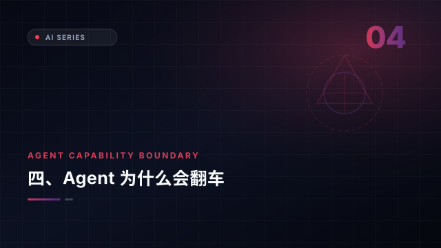

四、Agent 为什么会翻车：智能体的能力边界在哪
智能体翻车是常态而非意外：拆解函数调用与规划幻觉的机制、实验室与现场的落差，以及复合型人才的机会。

我头一回认真把活儿交给编码智能体，是让它改我自己博客里的一个小功能。它先列了一份像模像样的计划，接着一步步调工具、读文件、改代码，动作很专业，我全程盯着，像带一个什么都敢试、又什么都得盯着的实习生。坏就坏在第四步：它顺手改了一行不该动的配置，之后的自查一路全绿，直到我手动验证才露馅。四十分钟后我关掉它的窗口，自己十分钟改完。我不觉得它笨，它单看每一步都做得像样。我意识到的是另一件事：会聊天和会做事之间隔着的东西，比大多数人想的多得多。这一篇就沿着这个落差往下写：智能体怎么干活，会在哪一步翻车，为什么现阶段别神化它。
智能体是怎么干活的
普通对话模型是问答式的：你说一句，它答一句。Agent（智能体）更进一步，围绕一个目标自己拆步骤：先想该干什么，再调用工具，看一眼返回结果，不对就修正重来。思考、计划、工具调用、复盘反馈，这个循环转起来，它才从「只会口述答案的顾问」变成「自己动手干活的助理」。
动手靠的是 Function-calling（函数调用）。开发者把一份说明书交给模型：我这里有哪些函数、参数长什么样、什么时候该用哪个。模型在对话里输出结构化的调用请求——函数名加参数——由外部程序真正执行，再把结果喂回模型。模型自己什么都不执行，它只负责填单子。这个能力 2023 年 6 月由 OpenAI 正式推出，之后成了各家大模型的标配。工具一多，接口就乱，2024 年 11 月 Anthropic 又开源了 MCP（模型上下文协议）：工具方按协议写一次接口，任何支持协议的模型都能接，有点像所有外设统一了 USB-C 口。2025 年 3 月 OpenAI 宣布跟进，同年 12 月 Anthropic 把协议捐给 Linux 基金会新设的 Agentic AI 基金会，它成了厂商中立的行业标准。一年多后，这套协议长成了成熟规范：2026 年 7 月更新的 MCP 规范进一步简化了通信方式，不再要求长期维持连接会话，并新增了长耗时异步任务（Tasks）与对话内交互界面（MCP Apps）两项扩展；安全准则也明确提醒：工具描述本身不可盲信——看似普通的工具说明书里，也可能藏着诱导模型的恶意指令。
机制看着严密，但有个先天软肋：闭环上每一环，都由一个会出错的模型驱动。计划是模型编的，调用是模型填的，连结果成没成也由模型自己判断。链子越长，能断的地方越多。
每一步都有翻车点
最出名的毛病是规划幻觉。让智能体调用一个并不存在的接口，它不会说「我没这个工具」，而是会一本正经地接着编参数，把整段计划编到底。更常见的是小错：参数写错一位，该调 A 工具却调了 B，任务没做完就宣布收工。模型只负责填单子，程序照单执行，错一个参数，或者该调的时候没调，闭环就断了，而它自己往往毫无察觉。
评测数据比个案更硬。清华团队 2023 年发布的 AgentBench 智能体评测，覆盖操作系统、数据库、网页购物等 8 个环境，结论可以概括成一句话：会聊天不等于会做事。GPT-4 在 8 个环境里 6 个领先，但按论文自己的判断，这类模型还称不上实际可用的智能体；多数开源模型的成绩接近于零。
Devin 这个案例恰是一体两面。2024 年 3 月 Cognition 公司发布它，宣传语是全球首个 AI 软件工程师。官方技术报告给出了硬数字：在 SWE-bench 这套真实 GitHub 工单基准上，无辅助解决率 13.86%，远超此前最好的 1.96%。但同一组数字反过来读，就是约 86% 的任务失败。它的演示视频后来被资深开发者逐帧拆解，发现任务并非真实客户订单，过程里需要大量人工补位，工程通讯 Pragmatic Engineer 2024 年 4 月的报道把来龙去脉梳理得很清楚。技术进步是真的，营销话术是虚的，两件事同时成立。更早的 AutoGPT 也一样：2023 年开源后一度是现象级项目，很多人第一次看见 AI 给自己下命令，实际用起来却容易陷进循环，反复执行同一个无效动作，烧着 API 费用交不了差。
还有一层更难防：错得不自知，用的人还觉得快了。GitHub 和微软研究院 2023 年 2 月的对照实验里，95 名开发者用 Copilot 完成同一个小任务，平均快了 55.8%；开发者分析公司 Uplevel 2024 年 9 月追踪约 800 名真实公司的开发者，却发现 Copilot 用户在合并周期和吞吐量上没有显著提升，引入的 bug 还多出 41%。评测机构 METR 2025 年 7 月的随机对照试验把这个矛盾摆上了台面：16 名资深开源开发者在自己最熟悉的成熟项目上干活，随机分组决定能不能用 AI 工具，结果用 AI 的一组实测慢了 19%，而他们事前自估会快 24%，做完之后仍然自估快了 20%。体感和实测可以完全背离。METR 自己说明，这个结论只适用于资深开发者加熟悉的大型代码库，不能外推；对新手和简单任务，AI 提速依然成立。三组数据合起来看：实验室的小任务快一半，真实工程里可能不快甚至更慢，而使用者的普遍感觉是变快了。
翻车点还在随形态翻新。2025 年起出现、2026 年加速普及的新形态是代理式浏览器：OpenAI 的 Atlas、Perplexity 的 Comet 这类产品把搜索、点击、填表整段交给 AI 执行，浏览器从工具变成智能体，普通人第一次把已登录的账号权限直接交给 AI。安全公司 Zenity 在 2026 年黑帽大会（Black Hat USA）上披露了一类无需用户点击即可触发的「意图碰撞」（Intent Collision）漏洞：网页里暗藏的指令能混淆 AI 对用户本意的判断，进而接管账号或窃取数据，覆盖 Atlas、Claude in Chrome、Comet 这些它测过的主流产品——是形态级的风险，不是某一家产品的 bug。配套生态也在出事：恶意扩展包混入第三方技能仓库 skills.sh，窃取开发者的远程服务器密钥（SSH）与云平台凭证，累计超过百万次安装后才被下架。把账号权限交给 AI 代理，等于把钥匙交给实习生——还是开头那个会顺手改配置的实习生。 工作流优先、敏感操作留人工确认，这条保守结论在 2026 年拿到了实证。
记忆靠不住，多智能体也不免费
智能体的记忆分两层。所谓短期记忆，只是「还在上下文窗口里的字」：窗口一满或者会话一关就没了，它和真正的记忆不是一回事。长期记忆才更接近记忆——把信息存到窗口之外的数据库，需要时检索回来。ChatGPT 的 Memory 功能是这类做法的产品化例子；企业里的 AI 知识库走的是同一条路，就是第三篇掰开过的 RAG（检索增强生成）：回答前先从知识库检索相关片段塞进上下文。开卷能降低胡说的概率，但不根除——检索不到、检索错、模型干脆无视检索结果，三种失败都存在。各家产品的记忆留存规则与跨会话稳定性仍在频繁调整，用时需以实测为准。
另一层是自我反思：任务失败后让智能体写一份书面检讨，把教训作为上下文带进下一轮重试。这套机制在边界清晰的任务上用得多；至于在开放复杂任务上究竟能提升多少成功率，目前还缺乏公认的实测数据。
再往上叠就是多智能体：多个智能体分工，不同角色、不同工具、互相通信，共同完成一个任务。最出圈的演示是斯坦福 2023 年的生成式智能体实验，25 个智能体在虚拟小镇里生活，消息口口相传，甚至自发组织了一场派对——但那是研究原型，不是生产力。Anthropic 2025 年 6 月公开的自家研究系统更接近实战：主控用最强模型，子任务分给轻一档的模型，内部评测比单智能体好出 90.2%；但 Token 消耗约是普通对话的 15 倍，Anthropic 自己写明只适合高价值任务。外部已有论文质疑这个内部口径能不能推广，一个子智能体带错方向、整组白干的误差传播，也是多智能体的结构性风险。主控用强模型、执行用小模型来省成本，是这个方向常见的思路。多智能体不是免费的聪明。
所以 Anthropic 在 2024 年 12 月的工程博客里给了条反直觉的建议：能用工作流解决的就别上智能体。工作流是人预先写死流程、模型只填空；智能体是模型自己决定步骤和何时收工。前者可控、便宜、出错好排查。连把智能体当招牌的厂商，自己都在劝人别急着上全自动。
云端、本地还是私有化
智能体要跑起来，还有个绕不开的问题：跑在哪。三种形态对应三种处境。
云端 SaaS 是多数人的形态：浏览器或应用直接调厂商公有云上的模型，免部署、模型最新、门槛最低，代价是数据要出内网、按用量持续付费、断网就瘫痪。
本地部署是把开源权重模型跑在自己的机器上。Ollama 这类工具一条命令就能跑起 Llama、Qwen、DeepSeek，LM Studio 给非命令行用户做了图形界面。我自己在笔记本上试过：7B（约 70 亿参数）级的模型量化之后大约占 4 到 6 GB 内存，这是社区的经验量级，不是权威基准；问它日常概念或数码排障答得有模有样，让它写稍微复杂的工程代码就容易露怯。隐私、离线、成本可控是本地的好，能力上限受本机硬件约束、整体落后于顶级闭源云端模型，是本地的账。
企业私有化是把模型部署进内网机房，数据不出企业，电力、能源、国企这类强合规行业的首选。据中国电力报等报道，国家电网 2024 年 12 月发布光明电力大模型，落地在电网调度辅助、设备识别这些场景；据中国经济网报道，南方电网的大瓦特 2025 年 2 月把 DeepSeek 做了本地化私有化部署，接进自家模型体系。它们选私有化不是因为私有化模型更强，而是数据不能出内网。
选哪种部署方式，取决于数据有多敏感，而不是模型参数有多大。 本地不等于落后，私有化不等于浪费钱，三种形态会长期并存。
几个常见的误区
- 「智能体已经是能自动干活的数字员工」。Gartner 2025 年 6 月的新闻稿预测，超过 40% 的智能体项目会在 2027 年底前被取消，死因是成本上升、业务价值不清、风控不足，几乎不是模型能力不够；它还提出了 Agent washing（智能体贴牌）的说法——自称智能体的供应商数以千计，够格的只有约 130 家。当下主流的落地形态是工作流加人工兜底，全自动是少数。
- 「多智能体一定比单智能体强，多多益善」。前面算过账了，这里只补一句：那点增益要在高价值任务上才兑现得起，把「多多益善」当默认选项，是最容易多花的钱。
- 「演示视频等于产品水平」。判断智能体产品看三样东西：官方给的失败率数字而非成功案例、过程是否需要人工补位、评测口径是什么。Devin 的 13.86% 比它的演示视频诚实得多。
- 「AI 客服替代人工已成定局」。Klarna 2024 年 2 月自报 AI 客服上线首月处理 230 万次对话，工作量相当于 700 名全职客服；2025 年年中，其 CEO 公开承认在成本和服务质量之间过度偏向了成本，宣布重新招聘人工客服，转向 AI 优先、人工兜底的混合模式。
- 「上了 AI 知识库就万事大吉」。RAG 只解决知识从哪来，解决不了错了谁负责。2024 年 2 月，加拿大仲裁庭裁定加拿大航空为官网聊天机器人的错误答复赔偿约 812 加元，航司辩称「机器人是独立实体」，被仲裁庭驳回——责任永远在部署方，答案标注来源、高危问题转人工这类兜底设计不是可选项。
我的判断
有意思的是，Gartner 的预测并不只有死亡名单：到 2028 年，约 15% 的日常工作决策将由智能体自主做出（2024 年约为零），33% 的企业软件将内置智能体（2024 年不足 1%）。死亡名单和渗透率曲线并不矛盾——泡沫和基建同时发生，「未大规模落地」不等于「没有价值」，铺开宣传也不等于「已经成熟」。我的态度是把它当重型工具用、当实习生带：任务给边界，过程要盯着，交付前自己过一遍——反正出了事，谁也不能拿「这是 AI 干的」免责。
顺着想一层更有意思。智能体现阶段最需要人做的三件事：把模糊需求翻译成有边界的任务，对输出做校验，设计兜底和责任链。第一件要懂业务才知道边界在哪，第二件要懂业务才验得出对错，第三件要懂流程才接得住事故。这三件事恰好是纯技术背景的人最缺、行业老兵最有的。智能体越是会翻车，行业积累加 AI 工具的复合型位置就越稳。这也是我对「要不要追智能体热点」的回答：值得学，但把它叠在你本来就懂的行当上，比空着手挤算法岗划算。
智能体只是工具生态的一角。把镜头拉远，下一篇看看这些技术在中国这块土地上长成了什么样——长板是什么，坎在哪里。